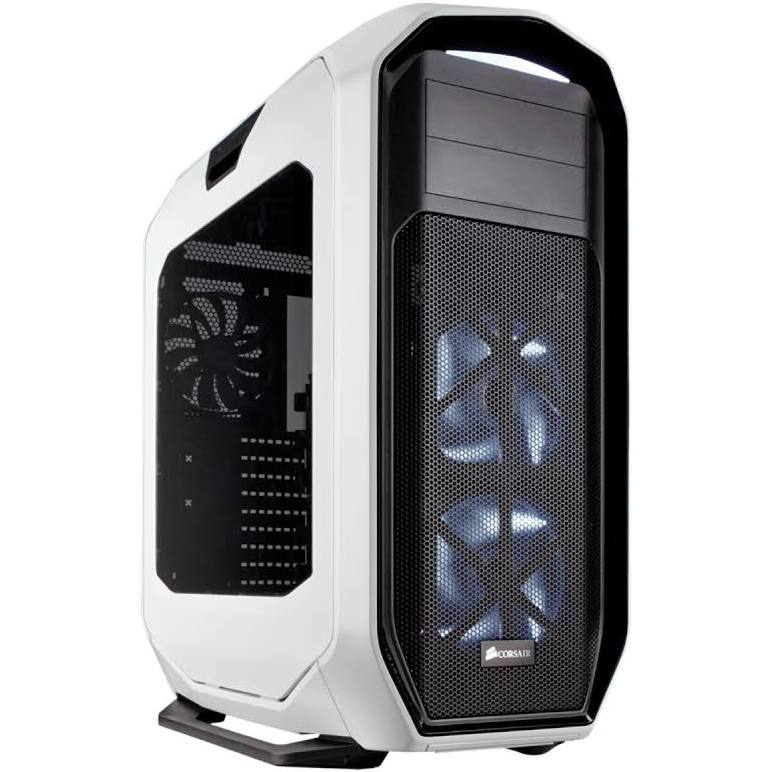
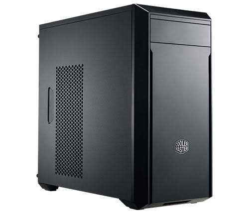
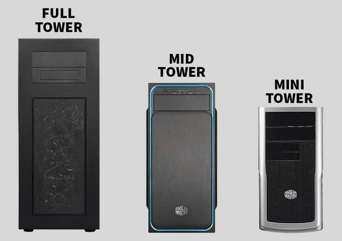

16 Dec, 2021
CASE
What is that?

What is that? Case!
For a long time you’ve probably thought it was just a black box. A big, ugly and very boring black box. Little more than an afterthought, and probably quite a cheap one at that. Or, at least, it was something you didn’t spend any serious time thinking about when you bought your computer, or when you had your PC system built.
The computer case serves mainly as a way to physically mount and contain all the actual components inside a computer, like the motherboard, hard drive, optical drive, floppy disk drive, etc.
Most often cases are manufactured using a combination of steel, aluminium, plastic and tempered glass. Some cases feature an acrylic window so that users can see into the inner workings of the device, and showcase any special lighting (specifically the RGB-style lights which gamers like).
computer cases come in different sizes called form factors. All components must be compatible to work properly together.
The computer case serves mainly as a way to physically mount and contain all the actual components inside a computer, like the motherboard, hard drive, optical drive, floppy disk drive, etc.
Most often cases are manufactured using a combination of steel, aluminium, plastic and tempered glass. Some cases feature an acrylic window so that users can see into the inner workings of the device, and showcase any special lighting (specifically the RGB-style lights which gamers like).
computer cases come in different sizes called form factors. All components must be compatible to work properly together.
Fork factors (sizes):
FULL-SIZE TOWER CASES
Full-size tower cases are typically larger in volume than desktop cases, and this is because they are built with upgrades in mind. There is more room available for drive bays and expansion slots, meaning you can add to or replace and upgrade the components of your system as your needs change.

MID-TOWER
Mid-tower cases are the most common type of chassis used in the office environment, where space is almost always at a premium. These cases are approximately 18” high, and they feature less drive bays (approx. two to four external bays).

Mini- Tower
A mini-tower case is slightly smaller again, and will typically have only one or two external bays. This means mid-tower and mini-tower cases are much less adaptable or ‘future proof’ than full-size tower cases.
